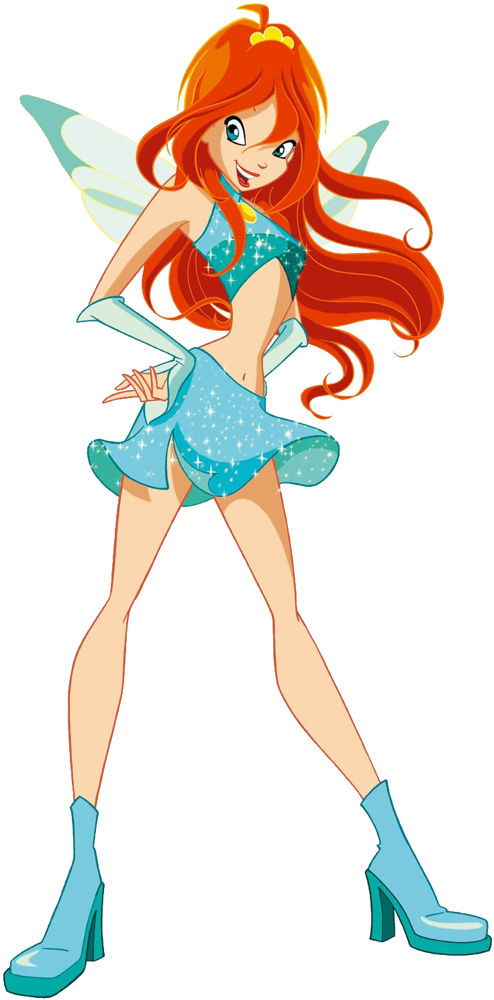

Bloom, a Fada detentora da Chama do Dragão
Bloom é a princesa e Fada Guardiã de Domino!
Idade: 16 anos
Aniversário: 10 de Dezembro
Biografia:
Bloom nasceu no planeta de Domino, filha do rei Oritel e da rainha Marion. Logo após o nascimento, seu planeta foi atacado por um grupo de bruxas (As Três Bruxas Ancestrais) que procuraram roubar a Chama do Dragão de Domino. Durante esta batalha, a cultura viva e população foi dizimada. Em um ato final de sacrifício para garantir que a Chama do Dragão não caísse nas mãos erradas, a irmã de Bloom, Daphne, enviou-a em um portal que levou a outro planeta, a Terra. Fazendo isso, as bruxas amaldiçoaram Daphne através do seu poder Sirenix, fazendo os pais das duas meninas acreditarem que ambas estavam mortas. Na Terra, Bloom surgiu em um edifício em chamas que seu pai adotivo Mike, um bombeiro, estava apagando. Mike resgatou Bloom e ele, junto de sua esposa, Vanessa, uma florista, acabaram adotando-a. Bloom cresceu tendo uma infância tranquila e sem consciência de suas verdadeiras origens. Ela e Selina eram amigas próximas durante a infância e costumavam tocar juntas na Floresta das Flores. Em sua juventude, ela recebeu um presente, seu coelho de estimação Kiko, e encontrou sua inimiga jurada, Mitzi. Ela também namorou um menino chamado Andy. No final da adolescência, Bloom encontrou Stella lutando em um parque local com Knut, um ogro. Quando Stella estava prestes a ser derrotada, Bloom usou um ataque mágico que tornou a luta em favor de Stella, e ambas foram capazes de derrotar o ogro. Stella ficou impressionada com o poder de Bloom e encorajou-a a estudar em Alfea, a prestigiada escola para fadas onde Stella estudava. Curiosa sobre o desenvolvimento de seus poderes e ansiosa para descobrir de onde vieram, Bloom concorda, depois de convencer seus pais.
Poderes:
Chama do Dragão, Fogo.
Curiosidades:
1. Sua melhor amiga é Stella.
2. Pixie: Lockette.
3. Está noiva de Sky, Rei de Eraklion, anteriormente o príncipe e herdeiro.